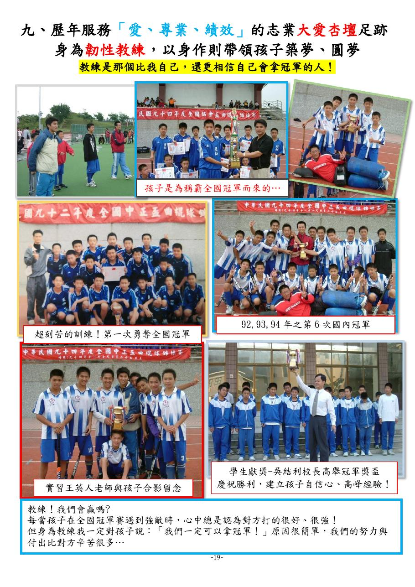
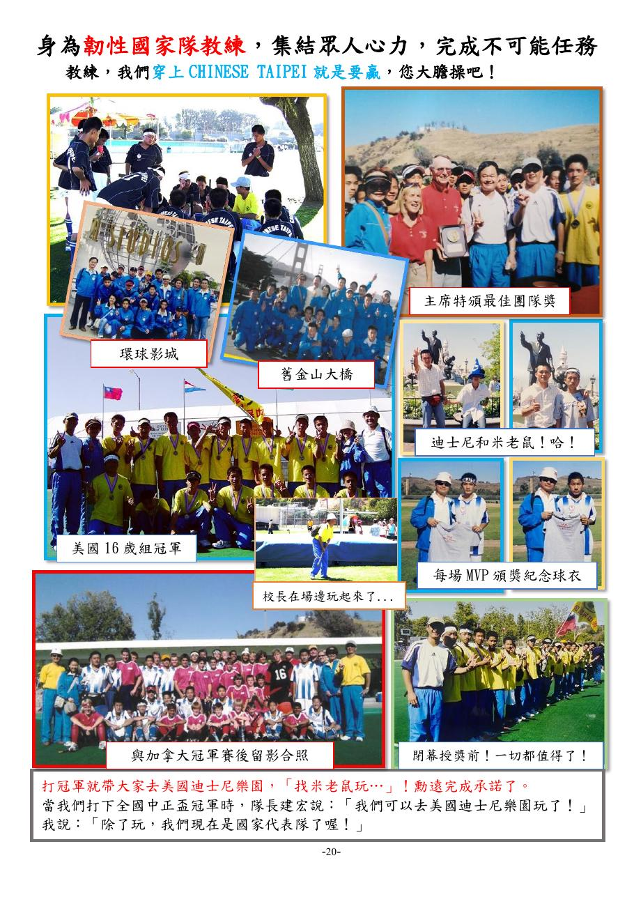
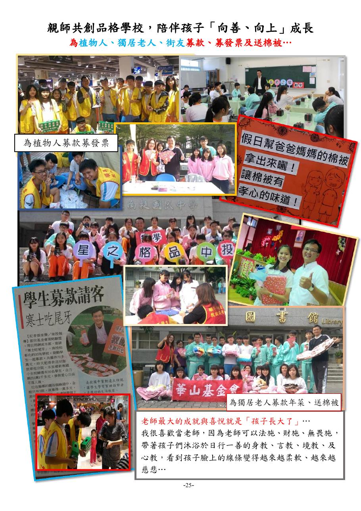
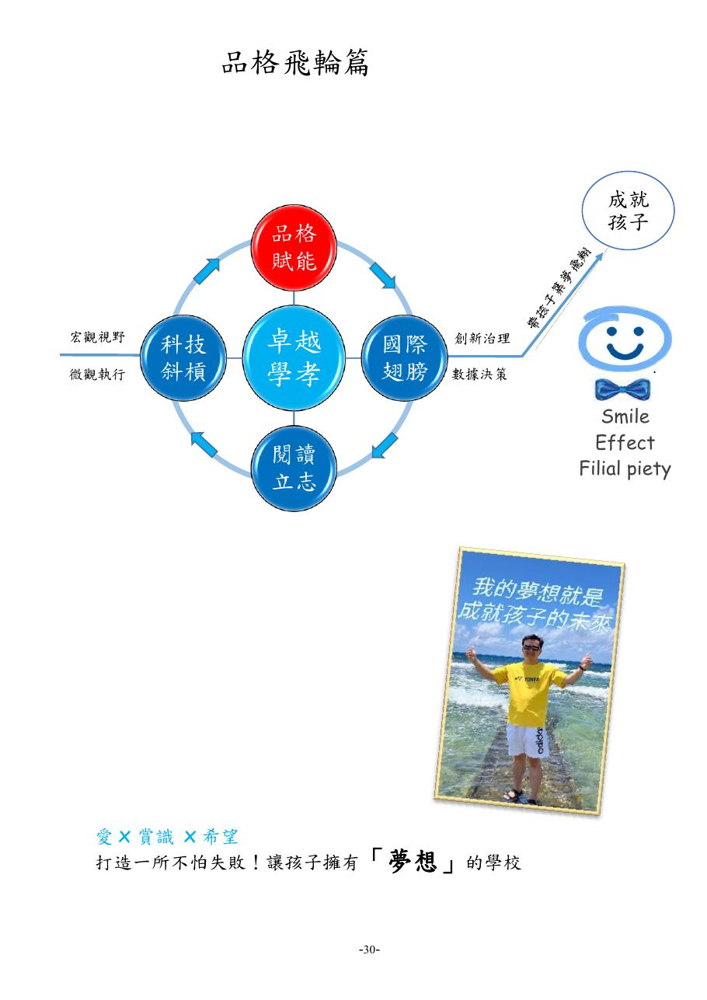
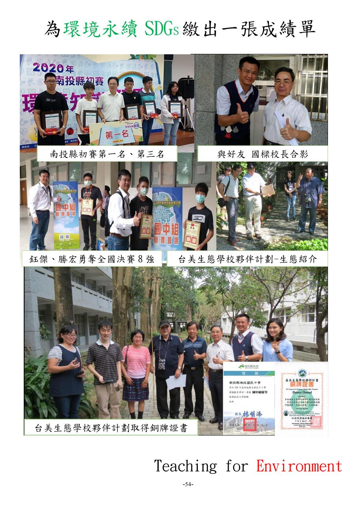
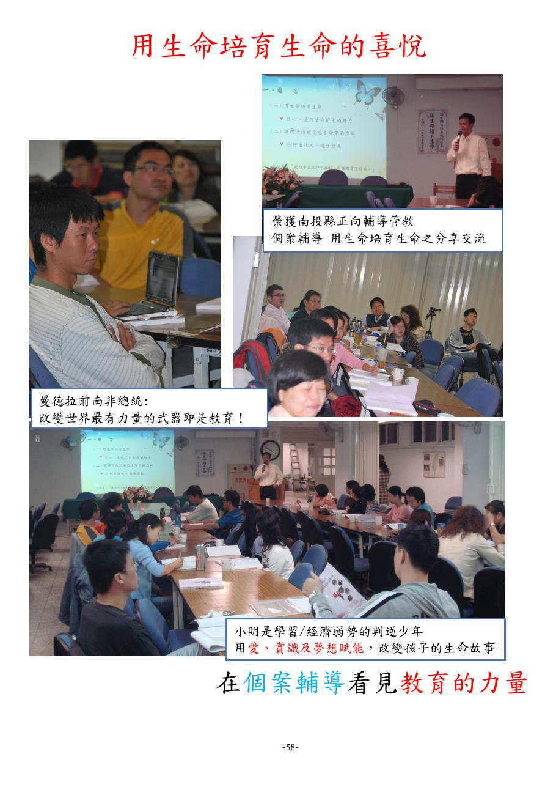
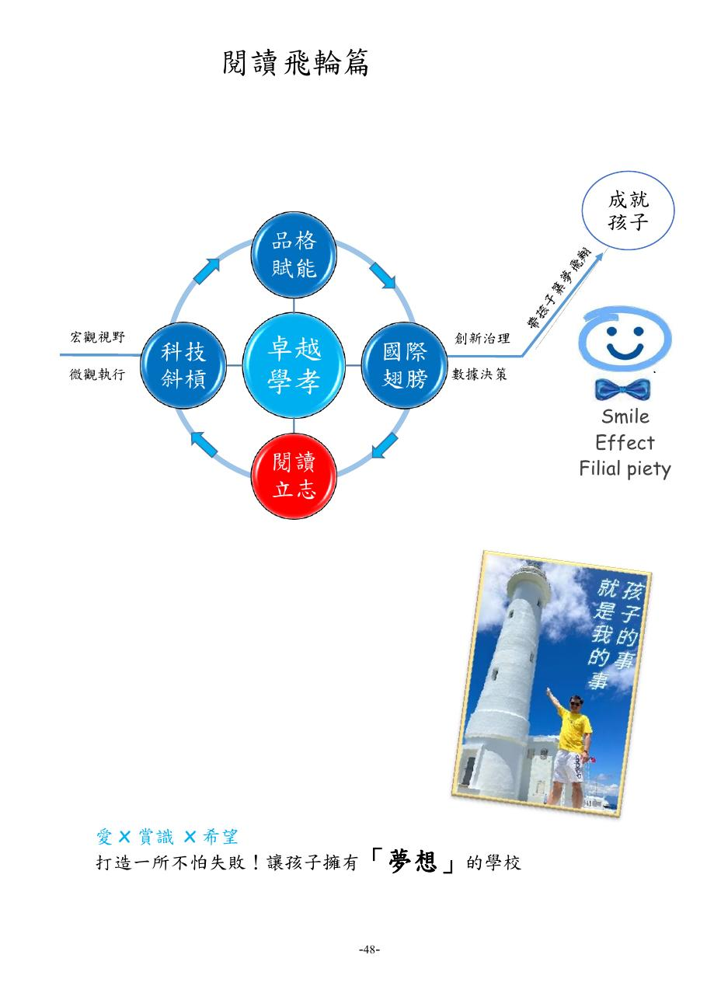
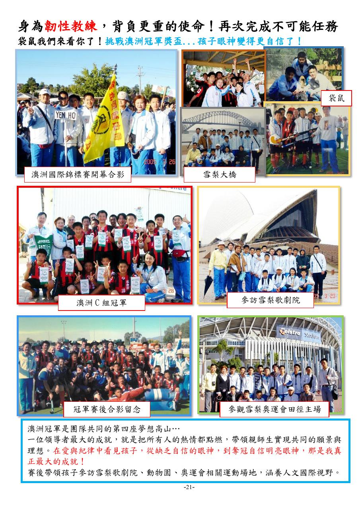

以運動
帶孩子築夢
從曲棍球訓練到全國冠軍與國際賽，讓孩子在紀律裡遇見自己的韌性。
看見冠軍現場 ↗竹山出發・走進每一個孩子的未來
這是一段從體育場、學務處到校務現場累積而成的教育旅程。相信孩子、陪伴孩子，也讓每一個平凡的孩子找到自己的高峰。
01 / 這個人相信什麼
「每個孩子都值得珍視。」
Every child matters.董勳遠是南投竹山人，從體育教師、曲棍球教練、學務主任，到參與校務治理，始終把「幫助每一位孩子成功」放在決策的中心。
他相信，一所學校可以成為孩子重新相信自己的地方；品格、運動、閱讀、科技與國際教育，不是分開的專案，而是支持孩子長出力量的不同入口。
03 / 一條走出來的路
取得中等學校體育教師資格，投入校園與運動隊伍，從教練工作理解「被相信」的力量。
帶領曲棍球、羽球與校隊，陪伴學生參與全國賽與國際交流，累積團隊領導與高峰經驗。
以童軍、反霸凌、孝德、社區服務與閱讀行動，讓校園裡的每一次日常都成為成長的機會。
持續推動科技、國際、環境與學習社群，也朝向「卓越校長」的下一段教育服務前進。
04 / 被看見的努力
每一份榮譽背後，都是孩子、家長、夥伴與社區共同完成的故事。







